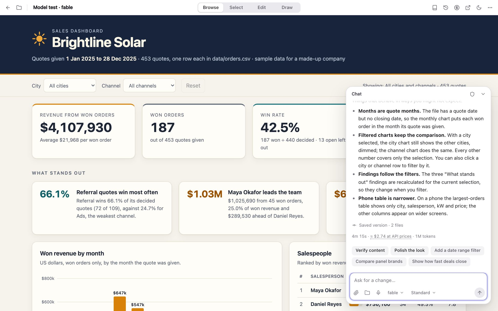

How it works
You describe a page. An agent builds it in a folder you own.
HTML Studio is a page per project with a chat beside it. The chat is connected to a real coding agent that works in the project's folder with files, a shell, the web and its own browser, and the page changes while it works. It runs on your own computer.

What happens when you ask
A request is a sentence in the chat. You can also select a part of the page and say what to change, type straight into any text, draw on the page, attach files, or point at a folder or a running app on the same computer.
- The studio prepares the request.It adds what it knows about the project (its data, its app, what you selected or changed yourself since last time) and picks the skills and connectors that fit this request.
- The agent works in the project's folder.It reads and writes files, runs commands, searches the web and saves what it reads, queries your data, and can start helper agents for parts of a large job.
- The page changes while it works.The project's page is served from that folder on its own address, and reloads as files change. A project with a back end has its server started and watched by the studio.
- Risky steps wait for you.A command that could do damage shows a card and waits for Allow. A file write outside the project is refused outright.
- The agent looks at what it made.It opens the page in a real browser, at desktop, tablet or phone width as the job needs, and gets what the studio measured there: text cut off, sideways scrolling, overlaps, faint text.
- The studio closes the request.It saves a version of the folder, opens the page once itself to see that it loads, shows what the request cost, and offers next steps. Any earlier version can be restored.
The parts
A project is a folder
With its own version history, its own address and, when it needs one, its own back end. Nothing is locked inside the studio: export gives one HTML file that opens from a double click, or a folder you can host.
The agent is a real one
The studio drives Claude Code with the project's folder as its working directory. It has files, a shell, the web, a browser to look at its own page, and the skills and connectors the studio hands it for each request.
The model is your choice
Your Claude plan when you alone use the studio, an Anthropic key, Claude on a cloud account, or any model through a LiteLLM gateway. Each request can use a different one.
Three ways to point
Select a part and ask about it, change text in place, or draw on the page. The agent is told exactly what you selected or drew and where.
Your own data and apps
Files you drop in, a PostgreSQL database read-only, an app brought in as a safe copy, or a folder and a running app it only reads where they are.
What it cost, every time
Each request shows its cost and each page a running total, kept apart as charged, plan-equivalent and unpriced. A figure the studio worked out itself says so.
How it keeps itself honest
An agent that builds a page can also build a wrong one that looks right. The studio's answer is to check, and to say what was checked.
It looks at its page
In a real browser, at three widths, with measurements. A page that is broken when it loads is said at the end of the request, not found by you later.
It checks its figures
The agent saves every page and PDF it reads. Verify content compares the marked figures on the page, and in the decks and documents made with it, against those saved sources.
It asks before risk
Risky commands, making an app live and buying generated media wait for your Allow. These rules read the command text: they catch ordinary mistakes and are not a sandbox.
It is measured
The same job was given to 28 models and every result checked in a browser against known numbers. The results, the pictures and the kit are on the benchmarks page.
Start
You need macOS or Linux, git, bash and curl or wget. The installer fetches the rest, uses no sudo and is safe to run again.
git clone https://github.com/ace26597/html-studio-public html-studio ./html-studio/studio2/install.sh studio setup # which model account, where it runs, who uses it studio start # prints the address, normally http://127.0.0.1:8200/
Then press New page and type what you want. Every command and what was tested: install and first run.
What it is not
It is a personal project at an early stage, for one trusted person on their own machine.
- The agent runs commands as you, like a coding agent in a terminal. So does a project's back end.
- There are no user accounts and no isolation between projects. Never put it on a public address: whoever can open the studio can run commands on the machine.
- A paid model account has no spending limit inside the studio. Set one at the provider.
- Claude models work best. Other models run through a translating gateway, which the agent program's maker does not support; the benchmarks show which ones worked.
- A restart ends running requests. Windows is not supported.
The full list, and what has and has not been tested: safety and limits.